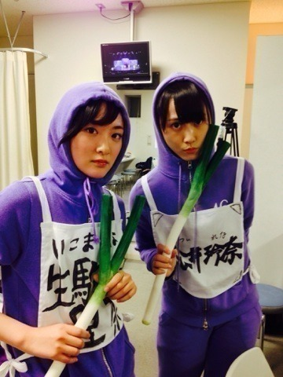

昨日千秋楽でした！！
何を血迷ったかポリン姫に立候補しましたっ！！
福田さんに言われたからなんだけどね笑
まぁどちらも二幕には出れませんでした。
三回目のプリンシパルはどちらかと言うと二幕に出れない方がはるかに多かったです。
でも私はたくさんの事を学ぶ事が出来ました。
苦手だった演技も好きになりました。
福田さんに
お前楽屋で喋ってる方が面白いと言われました。
それを何とかバラエティで生かしたいものです。
だだこのプリンシパルの期間での課題ではなくて、これからの活動にどう生かすのかを学べたと思います。
散々自分の事攻めて、病んでなんていられないのよね。
そんな時間あるなら面白い話ひとつ考えた方がよっぽどよいよ。
私は、自分の輝きが強い訳ではない。
努力してるつもりでも、それは天才や本当に努力している人にかなわない。
私は今の頑張りでは足りないの。
自分ひとりの魅力はみんなと比べたらまだ光っていない。
それを今は沢山の支えて下さる方がいるから輝いていれる。
それを早く
自分の内側から輝ける人になりたい。
16人のプリンシパル公演。
出演したメンバーみんな、支えて下さったスタッフの皆様、来て下さった皆様。
みんなありがとうございます！
そしてよく頑張りました！！
プリンシパルは終わりましたが、乃木坂の活動はまだまだ続きます！！
頑張りましょう！！ヽ(・∀・)ノ

プリンシパル千秋楽で、二幕に乱入笑
福田さんやスタッフさん達が出して下さいました！嬉しかったですヽ(・∀・)ノ
いつかは、自分の実力で舞台に出たいなと思いました。
才能がないから、憧れしか持ってないけど、
でも夢を叶える為に私は頑張る！！
へばなっ！⭐︎